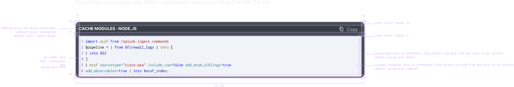
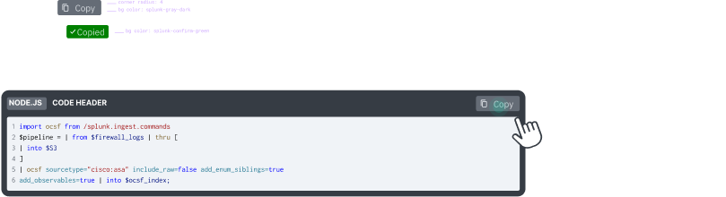

Cisco Splunk · UX Design Intern · Summer 2025
Improved discovery, clarity, and AI engagement across Cisco Splunk in 12 weeks.
I joined during a complex post-acquisition moment and worked across three leverage points: ecosystem usability, demo discovery, and AI-powered engagement. In one summer, I audited 8+ domains, shipped a new Demo Center live on splunk.com, and designed an AI code snippet feature that tested at 100% satisfaction.
Enterprise UX
AI interaction
Systems thinking
12-week sprint
Shipped work
Audit scope
8+
domains reviewed across Splunk's web ecosystem
Navigation
3 to 1
clicks reduced to find product demos
Validation
100%
feature satisfaction in AI snippet testing
Delivery
3
projects shipped or handed off dev-ready
The challenge
Cisco had just acquired Splunk, which meant users were moving through a fragmented ecosystem during a major transition.
What I did
I found three leverage points that could improve the experience quickly: cross-domain usability, demo discovery, and retention after high-intent code interactions.
Context
I joined in the middle of a complex integration, where users were feeling the seams.
Cisco acquired Splunk in 2024 for $28 billion. By summer 2025, Splunk was preparing to consolidate into cisco.com while still maintaining its own product ecosystem. That created a UX problem bigger than any one page or team: people were moving through disconnected surfaces with inconsistent language, navigation, and priorities.
My work focused on three places where design could make the biggest difference quickly: understanding ecosystem-wide friction, making demos easier to discover, and designing a smarter response to high-intent developer behavior.
Systems view
Audited the experience across multiple domains instead of only looking at isolated product pages.
Product value
Made it easier for users to discover demos that helped them understand what Splunk actually offered.
Future-facing UX
Explored how AI could keep developers engaged after they copied a code snippet and were ready to leave.
Audit
I turned a fragmented web ecosystem into something teams could actually act on.
I audited 8 or more domains against Nielsen's 10 heuristics and documented issues by severity, pattern, and affected user flow. The value was not just spotting problems. It was making cross-domain friction visible in a way sprint teams could prioritize.
I did not redesign these pages during my internship. Instead, I translated the highest-impact issues into actionable recommendations that teams could carry forward.
Interactive journey map built to help stakeholders see pain points across domains, not just inside their own teams.
What I delivered
Full heuristic audit with categorized issues and severity ratings
Cross-domain journey map for stakeholder visibility
Prioritized recommendations teams could pull into sprint planning
A repeatable evaluation method for future audits
Why it mattered
Made ecosystem-level patterns visible for the first time
Shifted teams from isolated fixes to shared UX issues
Turned abstract usability problems into concrete next steps
Created leverage beyond a single page or feature
What I would add next
If I had more time, this section would include lightweight recommendation concepts for the most severe patterns. For now, I am keeping this honest to the work that was actually delivered: diagnostic strategy, prioritization, and communication.
Demo Center
Users could not find the demos, so they never used them.
Splunk had no centralized home for product demos. To find one, users had to move through multiple layers of navigation, and most never discovered the content at all. Mouseflow recordings made that clear fast.
I designed a dedicated Demo Center that made demos easy to discover, easier to scan, and easier to access directly from the homepage.
"Users who found the demos had to navigate through three or more clicks, and most users never discovered they existed at all."
Mouseflow session analysis, June 2025
Before
Homepage → Resources → Product Tours → filtered list. High friction before the user even knew what was available.
After
Homepage → Demo Center. One clear entry point with featured demos and a dedicated browsing surface.
The Demo Center live on splunk.com. The main win was not just the page itself. It was reducing friction at the point of discovery.
Stakeholder pushback
Business stakeholders wanted multiple featured demos in the hero for visibility. Testing showed that the extra choices made people hesitate. I played the recordings in the room and used that evidence to simplify the entry experience.
AI Feature
I found a high-intent drop-off moment and designed an AI response to it.
On Splunk's technical blogs, users often copied a code snippet and left immediately after. That moment clearly signaled intent, but nothing in the experience responded to it.
For our team hackathon, I designed a feature that used that moment to surface contextual documentation and learning resources through Cisco's AI infrastructure. The goal was simple: turn a likely exit into continued engagement.
The feature triggered after a snippet copy event and introduced relevant next-step resources instead of letting the interaction end there.
Why it worked
It met users right at the moment of intent instead of asking them to start a new search from scratch.
What I designed for
Trust and transparency. I added a small explainer so users could understand why the AI suggested those resources.
Validation
UserTesting sessions with 6 developers and engineers showed 100% satisfaction with the concept.
Delivery
I handed off full visual and interaction specs so engineering could evaluate the feature without extra clarification.

Visual spec covering spacing, sizing, responsive behavior, and tokens.

Interaction spec covering triggers, states, and timing.
What I would refine next
If I kept building this feature, I would add clearer uncertainty signals like match strength and better ways for users to tune or dismiss recommendations. That would make the AI feel more transparent and controllable.
Learnings
What 12 weeks in enterprise taught me.
01Find leverage fast. In a large org, you cannot fix everything. The real skill is identifying the points where a design decision can unlock broader clarity.
02User evidence changes minds faster than opinions do. The strongest moments in this internship were not just design reviews. They were the moments when recordings and testing data shifted stakeholder decisions.
03Enterprise design is as much about systems and communication as screens. The work mattered because it connected product, business goals, and real user behavior.